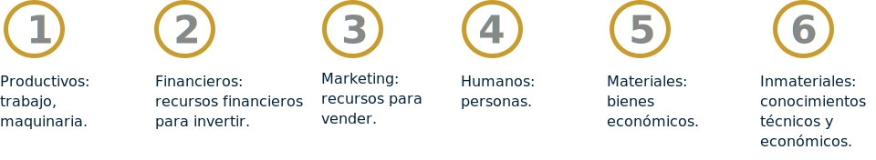

Introducción
La globalización ha llevado a cambios innumerables, pero de los más significativos ha sido la unificación de la información financiera para poder acceder a mercados globalizados en el que se hace necesario unificar criterios contables en la presentación de la información financiera cumpliendo unos requisitos establecidos y con la firma de garantía de una información clara y fidedigna.
Para que las microempresas puedan acceder a estos niveles de negociación es necesario que asuman e implementen las normas de información financiera que para su caso son simplificadas porque estas empresas no cotizan sus acciones en la bolsa de valores aspecto que las diferencia y las excluye de las |NIIF Plenas.
Para implementar las normas de información financiera NIIF es necesario conocer las características de la microempresa o empresa pyme e identificar los requerimientos que esta norma exige.
1. La Empresa
1.1 Concepto de empresa
Se define como una organización dedicada a actividades industriales, mercantiles o de prestación de servicios con fines lucrativos. Su función es la realización de una actividad productiva o transformadora en la que a partir de unos recursos se obtienen unos productos o servicios. Zapata (2017), la define como: “Ente económico creado por uno a varios propietarios para producir bienes o servicios que con el apoyo del talento humano, además de realizar otras actividades financieras y tecnológicas, busca generar utilidad para los socios y/o dueños”.
Para cumplir sus objetivos, toda empresa ha de coordinar los siguientes factores:
La coordinación de los diferentes factores es posible gracias a la administración de la empresa y la dirección es la encargada de establecer los objetivos, tomar decisiones y velar que se ejecuten.
1.2 Clasificación de las empresas
Todas las empresas tienen las características comunes ya mencionadas, no todas son iguales. Dependiendo del criterio al clasificarlas, existen diferentes tipos de empresas:
1.3 Tipo de sociedades
Las empresas tienen persona jurídica y se clasifican en sociedades mercantiles y sociedades mercantiles especiales
1.3.2 Sociedades mercantiles especiales
Dentro de este título se encuentran los siguientes tipos de sociedades:

Se dividen en sociedades de capital riesgo y fondos de capital riesgo.
Agrupaciones de interés económico
Sociedad mercantil, sin ánimo de lucro, que tiene por finalidad facilitar el desarrollo o mejorar los resultados de la actividad de sus socios. Su objetivo se limitará exclusivamente a una actividad económica auxiliar de la que se desarrollen sus socios, quienes responderán subsidiaria, personal y solidariamente entre sí por las deudas de la agrupación.
Sociedad de inversión mobiliaria
Sociedades anónimas, de capital fijo o variable, que tienen por objeto exclusivo la adquisición, tenencia, disfrute, administración en general y enajenación de valores mobiliarios y otros activos financieros, para compensar, por una adecuada composición de sus activos, los riesgos y los tipos de rendimiento, sin participación mayoritaria económica o política en otras sociedades.
1.4 Concepto contable de empresa
Urueña (2010), lo define contablemente como: “la producción, transformación, distribución, administración o custodia de bienes, para la comercialización y/o prestación de servicios”. Existe una empresa cuando posee los factores personas, capital, trabajo y tecnología.
1.5 Sectores económicos
Córdoba (2014), afirma que: “La empresa es miembro de un sistema económico constituido por una serie de estructuras que implican las relaciones económicas, sociales e institucionales y los elementos demográficos, técnicos, geográficos y políticos que vinculados fundamentan la evolución, origen y naturaleza de los fenómenos sociales”.
Como parte de este sistema se encuentran diferentes actividades económicas y/o productivas que se encuentran clasificadas por sectores económicos como lo muestra a continuación la figura 1.
Es existencia en determinada cantidad de materias y mercancía, necesaria para la elaboración de un producto. Estos activos son valiosos para la organización ya que, en parte, depende de su disponibilidad, administración y buen estado, la continuidad de un proceso productivo. Por ejemplo: un inventario de rollos de tela de diferentes características, necesario para la confección de prendas de vestir femeninas y masculinas.

Recibe del sector primario la materia y en el sector secundario se transforma con el fin de que llegue al consumidor final.
Encargado de ofertar al cliente productos finales elaborados por la industria y el sector turístico y financiero.
Llamada también economía del conocimiento, en éste se encuentran las actividades económicas basadas en labores intelectuales, son actividades que conciben, crean, interpretan, organizan, dirigen y transmiten con la ayuda y soporte del conocimiento científico y técnico, es decir, con el ingenio del hombre para generar valor para la sociedad. Económicas (2012).
A continuación se presenta una consolidación de los sectores económicos en la Tabla 2, donde se relacionan las actividades que se llevan a cabo en cada uno de éstos, así
Sectores Económicos y sus actividades
2. Contabilidad
2.1 Concepto
Es una técnica que permite organizar, recopilar, registrar las transacciones o hechos económicos en que incurre una organización. Es una herramienta requerida para consolidar la gestión de la organización durante un período de tiempo y conocer los resultados de las decisiones y acciones tomadas, siendo necesario evaluarlos contra lo planeado.
Es una herramienta indispensable para conocer los logros o falencias de la organización y continuar el camino trazado en la planeación o elegir nuevos rumbos con el objeto de obtener los resultados más óptimos, es decir, es un instrumento de control y de evaluación de la organización.
2.2 Clasificación
La contabilidad ón de información consolidada y de resultados. Existen diferentes tipos de contabilidad y se presentan a continuación:
Tipos de Contabilidad
CONTABILIDAD PÚBLICA
Regida por la Contaduría General de la Nación y encargada de utilizar los mecanismos necesarios para registrar las actividades económicas de las entidades estatales.
CONTABILIDAD DE SERVICIOS
Registra las transacciones realizadas por las empresas cuya actividad económica principal es la prestación de servicios.

CONTABILIDAD BANCARIA
Encargada de registrar las operaciones de los bancos o corporaciones de ahorro y crédito, como son los depósitos en cuenta corriente y en cuenta de ahorros, liquidación de intereses, giros, remesas, comisiones, créditos y otros servicios bancarios.
CONTABILIDAD COMERCIAL
Utilizada para registrar las actividades realizadas alrededor de la compraventa de mercancías en las empresas comerciales.
CONTABILIDAD DE COSTOS
Diseñada para registrar las operaciones económicas que determinan el costo de los productos semielaborados y terminados en empresas manufactureras o industriales.
CONTABILIDAD FISCAL
Su base es la renta gravable, definida en términos impositivos a partir del poder coercitivo de cada uno de los Estados para obtener recursos internos. Debe cumplir condiciones de equidad y justicia y corresponde a las decisiones de política económica de cada uno de los países.
CONTABILIDAD FINANCIERA
El objetivo es proporcionar datos respecto de la información financiera, el desempeño y los cambios en la posición financiera de la empresa y en los flujos de efectivo, de utilidad para un amplio rango de tomadores de decisiones. Su diferencia con respecto a la contabilidad tradicional es que tiene en cuenta el valor del dinero en el tiempo mediante el manejo de diferentes mediciones de activos, pasivos, patrimonio, ingresos y gastos, que nunca se habían tenido en cuenta. Es la más conocida de todas, y su base comprensiva son las NIIF emitidas por el IASC y por el IASB, de aplicación para todos los continentes excepto para Estados Unidos.
CONTABILIDAD GERENCIAL
Información de carácter interno, con el fin de impulsar y controlar la gestión, proceso que recibe el nombre de contabilidad gerencial (administrativa, directiva, interna, etc.). Con la unificación de la información a nivel internacional y de los lenguajes de reportes financieros de los negocios (XBRL) se busca que se satisfagan todas las necesidades de las diferentes áreas de la organización.
CONTABILIDAD AMBIENTAL
Toma vigencia por la responsabilidad de todo ente económico de preservar la naturaleza al momento de desarrollar su objeto social, para que su rentabilidad obtenida no sea en detrimento del medio ambiente. Las empresas deben reinvertir parte de sus utilidades en la preservación de cuencas hidrográficas y de sitios de recuperación de especies con el fin de que las nuevas generaciones encuentren un ambiente digno en la futura sociedad. Por consiguiente, hay que tener en cuenta que, en el planeta, todos somos responsables de la preservación del medio ecológico; por esta razón los países ricos están llamados a invertir en la cuenca amazónica, pulmón del mundo. Las NIIF exigen a los entes económicos hacer Capítulo 1 - Introducción a la contabilidad las provisiones necesarias sobre el desmantelamiento de activos que al momento de la liquidación requieran recuperar el medio ambiente.
CONTABILIDAD SOCIAL
Mide el impacto de la actividad en la sociedad o comunidad en la cual se desarrolla, tanto en la generación de empleo como en el mejoramiento de la calidad de vida, de acuerdo a sus programas con el recurso humano y otros beneficios a empleados de acuerdo a la sección 28.
2.3 Cuenta y su clasificación
2.3.1 Cuenta
Es el instrumento que permite registrar las operaciones y transacciones económicas realizadas de acuerdo a su naturaleza. Cada cuenta tiene una identificación o nombre que está compuesto por el código contable y el nombre.
2.3.2 Clasificación y nomenclatura de las cuentas
Las cuentas representan las propiedades, derechos y obligaciones de una organización en una fecha determinada, así como los costos, los gastos y las utilidades en un periodo determinado.
Cuentas Reales o de Balance
Estas cuentas representan valores tangibles como las propiedades y las deudas; forman parte del balance de una empresa. Las cuentas reales son Activo, Pasivo y Patrimonio.
Cuentas Nominales, De Resultado o Transitorias
Las Cuentas Nominales son llamadas también de Resultado, porque al final de un ejercicio contable dan a conocer las utilidades, costos y gastos; se reconocen como “Transitorias” porque se cancelan al cierre del periodo contable por lo cual desaparecen.
Comprende las cuentas del Estado de Ganancias y Pérdidas: Ingresos, Gastos, Costos de Ventas y Costos de Producción o de Operación.
Cuentas de Orden
Agrupa los valores que reflejan hechos o circunstancias que puedan llegar a afectar la estructura financiera de la empresa, así como las cuentas que sirven para efectos de control interno o información general, además las que utilizan para conciliar las diferencias entre los registros contables de la empresa y las declaraciones tributarias.
Cuentas de Orden Deudoras
Los dineros, documentos y bienes que conforman el grupo de cuentas de orden deudoras, se manejan como las cuentas de Activo, por tanto, su saldo es débito.
Cuentas de Orden Acreedoras
Los bienes que se han recibido para custodia, manejo o negociación constituyen el grupo de cuentas de orden acreedoras, estas se manejan como cuentas de Pasivo, por lo cual su saldo es crédito.
Clasificación de las cuentas
2.3.3 Nomenclatura
La nomenclatura corresponde a la codificación numérica que reciben así:
a) La clase que se identifican con el primer dígito,
b) los grupos que se identifican con los dos primeros dígitos,
c) la cuenta con los cuatro primeros dígitos, y
d) la subcuenta los seis primeros dígitos
A continuación se presenta la clase y el grupo de las cuentas, las cuales se constituyen en los títulos principales en los estados financieros básicos, así como en las cuentas de mayor concentración y atención para los usuarios mediante su uso continuo.
2.4 Normas relacionadas con contabilidad
Las normas de contabilidad provienen de la legislación establecida en el Estado colombiano como fundamento para llevar a cabo la actividad contable. Son el Decreto 2649 en el que se tratan aspectos como los principios y valores que tiene la información contable. En el decreto 2650 se establece el Plan Único de Cuentas (PUC), que quedó sin validez a partir de la implementación de las NIIF en Colombia.
De esta manera existe bibliografía que registra la contabilidad desde sus inicios y cada uno de sus avances a través de la historia, para este caso sólo se menciona la normatividad relacionada con la contabilidad en Colombia desde su reglamentación original hasta la actualidad.
A continuación, se presenta el siguiente consolidado del marco legal contable.
Marco Legal Colombiano
En el 2015, se realizó una revisión a las normas contables que rigen esta actividad y se expidió el Decreto 2420 de 2015 manteniendo vigentes las disposiciones consignadas en el Decreto 2649 de 1993 vigentes.
En ese mismo sentido se incluyeron las Normas Internacionales de Información Financiera (NIIF) que es una respuesta a las necesidades de unificar la información contable para acceder a nuevos mercados atrayendo la inversión extranjera, de manera que esta información sea comprensible a cualquier usuario.
Desde la entrada a Colombia de la Ley 1314 de 2009 o llamada Ley de Convergencia los usuarios de la contabilidad debieron iniciar una preparación para abordar el estudio de las NIC, teniendo en cuenta las normas actuales de contabilidad consagradas en el Decreto Reglamentario 2649/93, perdiendo vigencia el Decreto reglamentario 2650 por el cual se creó el plan único de cuentas y los reguladores globales y nacionales, entre los cuales se encuentran. Como lo describe Fierro (2015):
La Internacional Accounting Stándar Committee (IASC) fundada en 1973 y hasta el 2001 creó las 41 IAS de las cuales están vigentes 29 (Normas internacionales de contabilidad NIC como se conocen en Colombia) y las SIC que son las interpretaciones.
La Internacional Accounting Stándars Board, (IASB) que desde el 2001 ha emitido 9 IFRS (Normas Internacionales de Información Financiera NIIF como se conocen en Colombia), con sus correspondientes IFRIC o CINIIF interpretaciones de las NIIF.
La Fundación Internacional Accounting Standars Cómmitte, de Educación, que con base en la NIIF para Pequeñas y Medianas Entidades (NIIF para PyMEs) publicado por el Consejo de Normas Internacionales de contabilidad el 9 de julio de 2009, ha elaborado material de formación sobre la NIIF para PyMEs, en este momento se conocen varios módulos. (Pág 18).
2.4.1 Objetivos de la implementación de las NIIF
Los objetivos de la implementación de las NIIF para pymes, como nuevo lenguaje de los negocios para elaborar los procesos de la información contable, son:
-
Implementar un lenguaje universal [argot contable].
-
Facilitar el acceso de las entidades a los mercados de capital tanto nacionales como internacionales [bolsas de valores].
-
Atraer la inversión extranjera para el desarrollo del país, la creación de empleo y una mejor calidad de vida.
-
Reducir el costo de capital productivo.
-
Incrementar la eficiencia del mercado.
-
Mejorar la transparencia, la comparabilidad y la credibilidad y confianza en la información financiera.
-
Seguridad para los inversionistas.
-
Mayores flujos de capital basados en la información.
-
Autoridades responsables.
2.4.2 Visión de estándares globales de contabilidad
La visión de los estándares globales de contabilidad ha sido apoyada públicamente por muchas organizaciones:
2.4.3 Ámbito de aplicación de las normas internacionales de información financiera (NIIF):
Las Normas Internacionales de Información Financiera (NIIF) son aplicables a aquellas empresas que están obligadas a presentar informes financieros al público porque sus acciones son cotizadas en la bolsa de valores. Las normas NIIF plenas aplicables a organizaciones con estas características entraron en vigencia a partir de 2015.
Las NIIF para pymes se aplican a las organizaciones que los resultados de su gestión y/o la información financiera solo interesa o está orientada a los asociados de la entidad. Las normas de NIIF aplicables a las pymes fueron creadas en el año 2009, con un período de transición y observaciones hasta el año 2012 y entraron en vigencia a partir del año 2018.
2.4.4 Organismos emisores de las NIIF
Las Normas Internacionales de Información Financiera (NIIF) son aplicables a aquellas empresas que están obligadas a presentar informes financieros al público porque sus acciones son cotizadas en la bolsa de valores. Las normas NIIF plenas aplicables a organizaciones con estas características entraron en vigencia a partir de 2015.
Sociedad mercantil, sin ánimo de lucro, que tiene por finalidad facilitar el desarrollo o mejorar los resultados de la actividad de sus socios. Su objetivo se limitará exclusivamente a una actividad económica auxiliar de la que se desarrollen sus socios, quienes responderán subsidiaria, personal y solidariamente entre sí por las deudas de la agrupación.
2.4.5 Organismos reguladores de las NIIF a nivel nacional e internacional
En Colombia los reguladores nacionales de la contabilidad basados en la Ley 1314 de 2009, son:
En cuanto a los organismos e instancias internacionales se encuentran quienes promueven este tipo de actualizaciones en la información financiera:
Quienes a su vez cuentan con Comité Internacional de Estándares de Contabilidad (IASC) en inglés International Accounting Stándards Committee.
2.4.6 Principales cambios de PCG a NIIF
Según Fierro (2015), son varios los cambios del marco conceptual en los Principios de Contabilidad Generalmente Aceptados (PCGA) local frente a las NIIF, y radican en los siguientes conceptos fundamentales:
La elaboración de las políticas contables como fundamento principal de la contabilidad está a cargo del comité asesor y es aprobada por la alta dirección. Es cierto que estas políticas existían en normas locales, no con tanta relevancia como ahora, donde se constituyen en la forma de gestionar los negocios.
Adopción de las NIIF para microempresas, pymes y grandes empresas.
La entidad cuyos estados financieros cumplan la NIIF para las PYMES efectuará en las notas una declaración, explícita y sin reservas de dicho cumplimiento. Los estados financieros no deberán señalar que cumplen la NIIF para las PYMES a menos que cumplan con todos los requerimientos de esta NIIF (S3.3).
Identificación y sustanciación de las operaciones a través de la característica de esencia sobre la forma. Los hechos se registran siempre que la empresa tenga el control, reciba los beneficios y asuma los riesgos del bien.
Reconocimiento inicial mediante los modelos de costos y valor razonable.
Reconocimiento posterior mediante los métodos de valuación en la fecha sobre la que se informa.
El reconocimiento de forma rigurosa, basado en el cumplimiento de sus requerimientos de activos, pasivos y patrimonio, porque los ingresos y gastos son aumentos o disminuciones de los tres anteriores.
Las revaluaciones existen para las NIIF plenas, se aplicarán en la nueva modificación para pymes (2018) y aumentan el valor de los activos contra los resultados integrales.
Se efectúan mediciones en inventarios, cartera, propiedad planta y equipo, las cuales se llaman deterioro en el valor de los activos y se calculan a partir de los indicios internos y externos en el desmejoramiento de su importe. En caso de que estos indiquen una mejoría, se debe hacer reversión del deterioro [anteriormente se denominaban provisiones en inventarios, cartera, propiedad planta].
Los activos y pasivos diferidos son los impuestos a las utilidades. A pesar de la diferencia existente entre la S29 y la NIC12, en la nueva versión para pymes se pretende alinear los conceptos.
Por las diferencias que se generan entre los activos y pasivos contables con relación a los activos y pasivos fiscales, denominados diferencias temporarias [anteriormente diferencias temporales], se debe liquidar el impuesto diferido débito o crédito.
La mayoría de las transacciones donde se espera recibir un bien o servicio en fecha posterior, bajo aplicación de las NIIF, no se difieren debido a que el método de amortización es impracticable por falta de un modelo que asocie el diferido en el tiempo.
No existe correlación o asociación entre ingresos y gastos (S2.52).
No existen compensaciones a discreción del contador, sino por requerimientos de las mismas NIIF.
Los costos de investigación y desarrollo son gastos para las pymes, excepto para las grandes empresas que aplican las plenas.
Los activos contingentes deben cumplir con la probabilidad de flujos de beneficios económicos futuros probables con medición fiable. Su amortización es sobre la vida útil y, si no se puede calcular, se amortiza en 10 años. La nueva norma permitirá hasta diez años en pymes, mientras que en las normas completas se debe efectuar la evaluación anual de deterioro del valor de los activos.
Los pasivos contingentes solo van al estado de situación financiera cuando cumplan con los requerimientos del pasivo (salidas de efectivo probables y fiables). Si su ocurrencia es poco probable, se deja revelado en notas.
Las notas a los estados financieros deben revelar las políticas contables de la empresa y los cambios en los rubros significativos del estado de situación financiera. Los usuarios deben conocer las políticas contables empleadas en la preparación de los estados financieros para poder entender la información. Las políticas contables son responsabilidad de la gerencia [en el marco conceptual solo se hace referencia en el artículo 115 de la norma general sobre revelaciones a las políticas contables, las que perdían su esencia por la incidencia y exigencia de la norma fiscal].
Los cambios voluntarios en las políticas contables y los cambios en las estimaciones y errores se hacen en forma retrospectiva.
El criterio profesional es para definir las estimaciones (Fierro, A. (2015).
2.4.7 Principios de contabilidad
2.4.7.1 Principios de contabilidad
Conceptos y Principios Generales: De acuerdo al Artículo 6º de la Ley 43 de 1990, son principios o normas de contabilidad generalmente aceptados en Colombia, el conjunto de conceptos básicos y de reglas que deben ser observados al registrar e informar contablemente sobre los asuntos y actividades de personas naturales o jurídicas. Basada en éstos la contabilidad permite identificar, medir, clasificar, registrar, interpretar, analizar, evaluar e informar la historia de las operaciones de un ente económico, en forma clara, completa y fidedigna (Art. 1º, Decreto Reglamentario 2649/93).
Los conceptos y principios generales están compuestos:
Con la conversión a las NIIF la contabilidad en Colombia da un paso de avance al generar información oportuna y confiable, base para la toma de decisiones fundamentada en las normas básicas, técnicas generales y especiales para la revisión de la gestión de la organización y orientada al crecimiento de la empresa y los beneficios de sus dueños, empleados y la comunidad del entorno donde se desarrolla.
De acuerdo con Fierro, A. (2015), los fundamentos teóricos que maneja la contabilidad, son:
-
Patrimonialista, que consiste en que la información financiera debe servir a los intereses de sus dueños.
-
Mantenimiento del capital financiero, que consiste en fortalecer el patrimonio en la medida que se capitalicen valores de las utilidades del ejercicio se le da mayor capacidad productiva y eficiencia en sus operaciones.
El Decreto reglamentario 2649 de 1993 estableció las normas básicas y normas técnicas de la contabilidad como componentes de los principios de la contabilidad generalmente aceptados, como se muestra a continuación:
Las normas básicas están orientadas a las características que debe cumplir la contabilidad como: ente económico, continuidad, unidad de medida, período contable, valuación o medición, esencia sobre la forma, realización, asociación o relación de causalidad, mantenimiento del patrimonio, revelación plena, importancia relativa o materialidad, prudencia, y características y prácticas de cada actividad.
Así mismo las normas técnicas están orientadas a los requisitos y tratamiento que se debe dar a la información contable: Reconocimiento de los hechos económicos, Contabilidad de causación o por acumulación, Medición al valor histórico, Moneda funcional, Ajuste de la unidad de medida, Provisiones y contingencias, Clasificación de los hechos económicos, Asignación de costos y gastos, Diferimiento de ingresos y gastos, Asientos contables, Verificación de las afirmaciones, Ajustes, Información posterior a la fecha de cierre, Cierre contable.
Lo anterior se representa en:
Utilidad en la toma de decisiones, basada en la información financiera como función de satisfacción a los usuarios inversionistas, como quiera que sus acciones se mueven en el mercado de capitales, como es el caso norteamericano.
Confianza pública, con fundamento en la fé pública que emite el contador cuando firma un estado financiero y da confianza tanto al Estado como a terceros.
Con la estandarización de la contabilidad, para las pymes se adquiere:
Aunque el Decreto Reglamentario 2649 de 1993 no ha sido derogado, la implementación de las NIIF en el ejercicio contable implica:
Fundamento económico. Lo primero que se debe hacer es recoger la información sobre la transacción o suceso económico, útil en las decisiones de los inversores y prestamistas sobre el suministro de recursos a la entidad.
Identificación. Tiene que ver con el resultado de ese suceso, como por ejemplo un activo que debe cumplir con las características de la capacidad de generar beneficios en el futuro para la entidad.

Clasificación. Tiene que ver con identificar la NIIF que se debe aplicar, dependiendo de su naturaleza y características.
Reconocimiento. Hace referencia de: ¿cuándo sucedió el hecho?, ¿en qué momento la entidad asume los riesgos y los beneficios?, ¿qué cuenta es la más apropiada para su registro, dependiendo del criterio profesional? Medición en el reconocimiento inicial. Tiene que ver con el método de valoración, que por lo regular está definido por el costo y otros elementos que subyacen en la operación.
Medición posterior. También hace relación al valor que muestre la mejor alternativa de valuación, como por ejemplo el valor razonable, siempre que el bien permanezca dentro de sus activos disponibles para su uso, porque necesariamente genera una utilidad.
Baja en cuentas. Debe responder: ¿en qué momento se dará?, ¿tendrá utilidad o pérdida en la baja en cuenta?

Presentación. La presentación en el estado de situación financiera corresponde a la disposición del bien, que puede ser para la venta, uso o inversiones en propiedad.

Información a revelar. La revelación en notas de todo aquello que sea necesario para una mejor comprensión, como NIIF aplicada, reconocimiento, medición, valor razonable y su metodología aplicada.
Todo esto orientado a cuestionarse en cuanto a las decisiones a tomar según los resultados arrojados en la información financiera. ¿Cuáles son esas decisiones?
Los inversores existentes o potenciales requieren comprar nuevas emisiones de capital, vender sus inversiones y también capitalizar la empresa para darle mantenimiento del patrimonio. Decretar dividendos para sus accionistas o participaciones a sus socios.
Los prestamistas exigen la liquidación de sus acreencias. Inversores, prestamistas o acreedores requieren ver los estados financieros en perspectiva del estado de flujos neto de efectivo futuro de la entidad para analizar la capacidad de generar nuevos flujos de efectivo.
Características cualitativas Los estados financieros se preparan bajo las siguientes características cualitativas fundamentales y de mejora [antes: cualidades de la información contable], para que la información financiera sea útil y fiable.
De igual manera existen conceptos y principios tanto para las NIIF plenas como para las pymes, como se presenta a continuación,
Características cualitativas de la información financiera útil
Aunque las NIIF son normas claramente definidas que han venido siendo implementadas alrededor del mundo con el fin de acceder a mercados globalizados en igualdad de condiciones. Para Fierro, A (2015), existe un problema porque aunque están definidos los conceptos y principios generales de la contabilidad, se presenta la disyuntiva entre las NIIF y las armonizaciones con las NIIF en forma local, siendo preparadas discrecionalmente con adiciones, mejoras y eliminaciones, donde finalmente no se adoptan éstas normas sino que cada país hace lo propio. Otro problema que se identifica es el rezago contable de medición al costo, por la falta de experiencia en la adopción por primera vez y en la implementación posterior, de acuerdo a unos procedimientos basados en el marco conceptual para aplicación de las NIIF.
2.5 Características de pequeñas y medianas empresas
Las características de las pequeñas y medianas entidades se describen en las NIIF para pymes o empresas que no negocian sus instrumentos de patrimonio en bolsas de valores nacionales o internacionales.
Las Pymes tienen las siguientes obligaciones:
Hay que tener en cuenta que las NIIF para las pymes son las mismas NIIF plenas en forma simplificada, y en muchos casos son iguales porque su aplicación no exige esfuerzos desproporcionados.
2.6 Estados financieros con propósito de información general
El conjunto de estados financieros antes conocidos como estados financieros básicos son:
-
Estado de Situación Financiera, llamado en normas locales balance general.
-
Estado de Resultado y el Estado del Resultado Integral antes llamado estado de resultados.
-
Estado de Cambios en el Patrimonio
-
Estado de Flujos de Efectivo
-
Además de las Notas a los estados financieros que también hacen parte del paquete de información porque sirven para la toma de decisiones económicas.
2.7 Clasificación de los grupos de empresas
Para Colombia, el direccionamiento estratégico del Consejo Técnico de la Contaduría definió los grupos de empresas así:
En el caso de que una subsidiaria cuya controladora utilice NIIF plenas y no tenga obligación pública de rendir cuentas, puede cumplir con las disposiciones de las NIIF para pymes (S1.6). Una subsidiaria es una entidad donde la controladora [casa matriz] ha hecho sus inversiones para obtener beneficios en el futuro económico.
2.8 Estructura de las NIIF y NIIF pymes
Estructura de las NIIF y NIIF pymes
El siguiente cuadro corresponde a las normas internacionales que están disponibles para su adopción, tanto en empresas que deben reportar información al público del mercado de valores como en las pequeñas y medianas empresas y en las microempresas, que son las mismas secciones con un grado mayor de simplicidad.
Glosario
Activo:bienes y derechos que posee una organización. También llamadas las inversiones realizadas en maquinaria y equipos, infraestructura, entre otros.
Amortización:desde el punto de vista financiero, se entiende por amortización, el reembolso gradual de una deuda. La obligación de devolver un préstamo recibido de un banco es un pasivo, cuyo importe se va reintegrando en varios pagos diferidos en el tiempo. La parte del capital prestado (o principal) que se cancela en cada uno de esos pagos es una amortización.
Costo:es la erogación económica que representa la fabricación de un producto o la prestación de un servicio. Al determinar el costo de producción, se puede establecer el precio de venta al público del bien en cuestión (el precio al público es la suma del costo más el beneficio).
Utilidad:es una magnitud variable que aumenta al aumentar la cantidad consumida del bien hasta alcanzar un máximo, a partir del cual la curva de utilidad se vuelve decreciente.
Rentabilidad:un índice que mide la relación entre la utilidad o la ganancia obtenida, y la inversión o los recursos que se utilizaron para obtenerla.
Material complementario
| Autor, (año del documento o material), Nombre del documento o material. | Tipo de material ( Video, capítulo de libro, articulo, otro) | Enlace del Recurso o Archivo del documento o material |
|---|---|---|
| Las normas internacionales en la contabilidad y la entrada en vigencia de Ley 1314 de 2009 en el contexto colombiano | Publicación en enlace | Descargar |
Referencias bibliográficas
Antón, P. J. J., & Garijo, D. M. S. (2009). Empresa y administración. Retrieved from https://ebookcentral-proquest-com.bdigital.sena.edu.co
Fierro, M. Á. M. (2015). Contabilidad general con enfoque niif para las pymes (5a. ed.). Retrieved from https://ebookcentral-proquest-com.bdigital.sena.edu.co
Urueña, G. (2010). Universidad San Mateo. “Contabilidad Básica”. https://www.sanmateo.edu.co/documentos/publicacion-contabilidad-basica.pdf